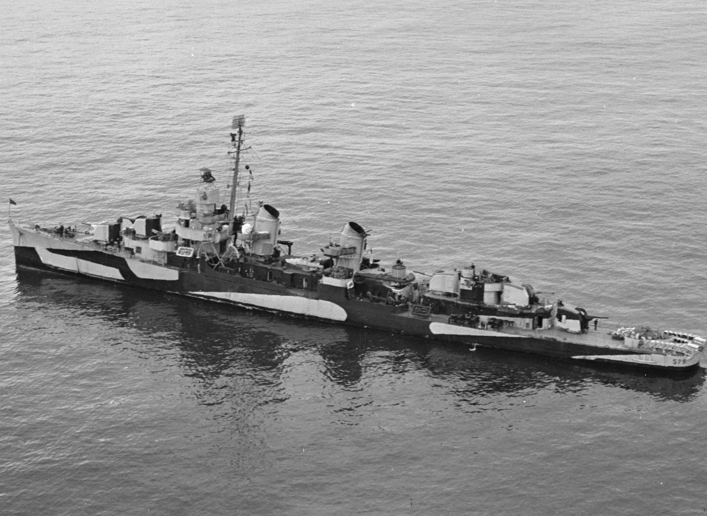
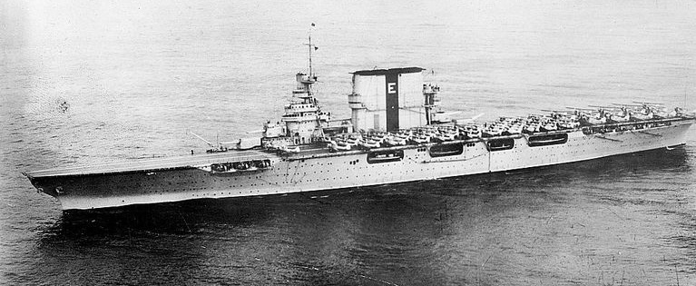
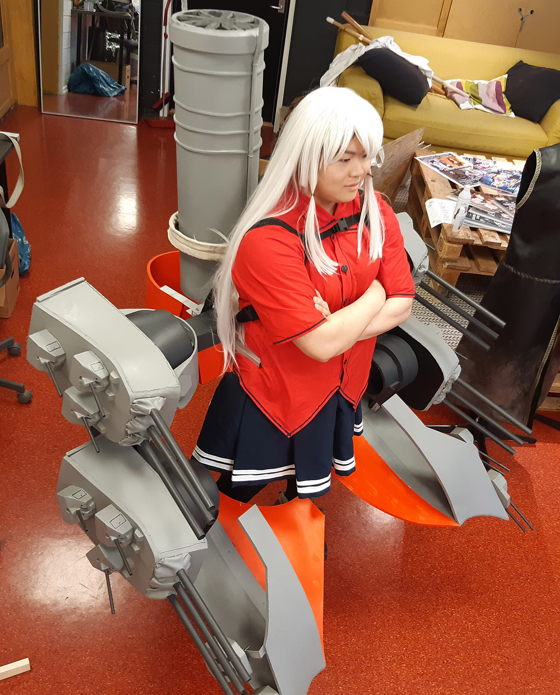
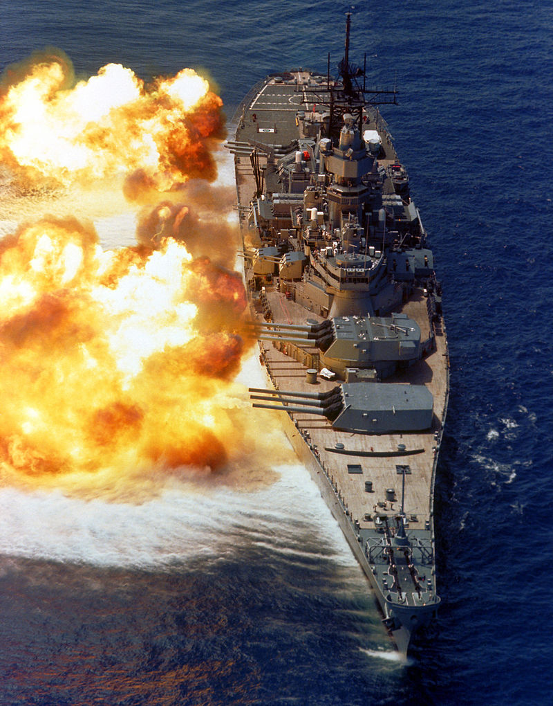

"Anything that can go wrong will go wrong."
About me
Bearing the name of both a very unlucky underaged bote and a very brave...perhaps too brave one, both who sacrificed their lives for the Allied war effort. Though probably more based off the former than the latter. I'm a hard working and very caring for my friends. I have never let down those around me and always fought to the bitter end. May the cold waters take me over my friends.
You'll hear many a thing about my story, but let me remind you how urban legends are born. Stories such as a drunken sailor firing one of the main guns, striking the garden of my commanding officer...well...Nobody told me about that one...
 Throughout this page, i'll tell you some parts of my story as it really was, and maybe some more personal details too while I'm at it...And it all really began a fine day on the 7th of May, 1942, the day my keel was laid down. With how well oiled US production was at that point, it only took until the end of September the same year before I was launched as a Fletcher class torpedo boat destroyer, ready to take on the Imperial Japanese Navy and serve my country!
Hobbies
Cosplay
 I do enjoy cosplaying as other ships, especially the big bad Battleships that could take such a beating while dishing one out in return. Look at ships like South Dakota in Guadalcanal, taking fire from Japanese battleships of the Kongou class in the second battle of Guadalcanal as if nothing was really going on.
Gaming
I do enjoy a good game after work. Who can say no to a round of "Shell the officer's garden" after a long shift in the cold north near the Aleutians, or some good old turkey shooting with 40mm Bofors anti-aircraft autocannons? The Japanese sure were willing to provide targets for us. Just don't let Zuikaku hear about me telling you this, okay? She sure won't be happy if she finds out I referenced the Great Marianas Turkey Shoot. At this point the writing really was on the wall for the Japanese war machine, and I think everyone was quite well clear of this by now.
History
 Having been a part of a historic event of such importance, serving next to notable friends such as USS Iowa, the mightiest class of fast battleships ever to be built and USS Intrepid, an aircraft carrier that earned 5 battle stars for her service during the war, along with the Presidential Unit Citation along with another 3 battle stars from the Vietnam War. She is still around as a museum ship in New York.
Films/Movies
Can't say no to a good movie after a day's worth of work either, sure helps the crew loosen up after a long hard day. Plenty good options out there too, all from die-hard reenactments of historical events such as Gettysburg, along with more modern miniseries such as HBO's classic Band of Brothers and Valley of Tears. If I'm not in the mood for something so sincere, maybe unrealistic movies like Kelly's Heroes or even animated series such as Girls und Panzer falls more to taste.